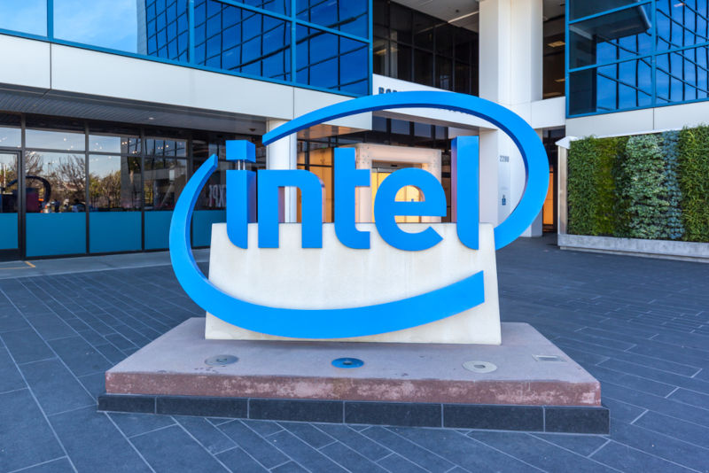

Um processador é um componente essencial em qualquer dispositivo eletrônico,
responsável por executar instruções e processar dados. Desde os primeiros computadores,
os processadores têm desempenhado um papel fundamental na evolução da tecnologia,
impulsionando avanços significativos em computação e eletrônica.
Esses chips de silício são projetados para lidar com uma variedade de tarefas, desde cálculos
matemáticos simples até operações complexas em aplicativos modernos. Eles são o cérebro
por trás de computadores pessoais, servidores, smartphones e uma infinidade de
dispositivos eletrônicos que usamos em nosso dia a dia.
Os processadores modernos são projetados com múltiplos núcleos, o que lhes permite
executar várias tarefas simultaneamente, melhorando significativamente o desempenho.
Além disso, eles incorporam tecnologias avançadas, como cache de memória, pipelines de
instruções e otimizações de energia, para garantir eficiência e desempenho otimizados.
A escolha do processador certo para uma determinada aplicação é crucial, pois influencia
diretamente o desempenho do sistema. Com o avanço da tecnologia, os processadores
continuam a evoluir, oferecendo maior desempenho, eficiência energética e capacidade de
processamento para atender às demandas crescentes dos usuários e das aplicações
modernas.
História e Evolução dos Processadores
A história dos processadores é uma jornada fascinante que acompanha de perto o avanço
da tecnologia da computação. Desde os primeiros dias da computação eletrônica até os
poderosos chips de hoje, os processadores evoluíram consideravelmente em termos de
desempenho, eficiência e complexidade.
Os primeiros computadores eram enormes e consumiam quantidades enormes de energia.
Os primeiros processadores eram construídos com válvulas eletrônicas, que eram grandes,
quentes e propensas a falhas. O ENIAC, um dos primeiros computadores eletrônicos, por
exemplo, era composto por mais de 17.000 válvulas e ocupava um espaço enorme.
A transição das válvulas para os transistores, nos anos 50 e 60, foi um marco importante na
história dos processadores. Os transistores eram menores, mais confiáveis e consumiam
menos energia do que as válvulas, permitindo a criação de computadores menores, mais
rápidos e mais eficientes. Isso deu origem à chamada "era dos mainframes", em que os
computadores se tornaram mais acessíveis e começaram a ser utilizados em diversos setores.
A década de 70 viu o surgimento dos primeiros microprocessadores, como o Intel 4004, que
foi lançado em 1971 e é considerado o primeiro microprocessador comercialmente disponível. Ele tinha apenas 2.300 transistores e operava a uma velocidade de clock de 740 kHz. No entanto, foi um passo revolucionário no desenvolvimento de processadores, pois
permitiu a criação de computadores pessoais e dispositivos eletrônicos de consumo em massa.
Nos anos seguintes, os processadores continuaram a evoluir rapidamente, com o aumento
do número de transistores, a melhoria da arquitetura e a introdução de novas tecnologias,
como o cache de memória, os pipelines de instruções e a computação paralela. Isso levou
ao desenvolvimento de processadores mais poderosos e eficientes, capazes de lidar com
tarefas cada vez mais complexas e exigentes.
Hoje, os processadores são encontrados em uma ampla gama de dispositivos, desde
smartphones e tablets até servidores e supercomputadores. Eles continuam a evoluir, com o
desenvolvimento de tecnologias como a computação quântica e neuromórfica, que
prometem levar o desempenho e a capacidade de processamento a novos patamares. A
história dos processadores é uma história de inovação e progresso tecnológico, e seu papel
na sociedade moderna é indispensável.
Arquitetura Básica de um Processador
Como já foi mencionado, a CPU é responsável pelo processamento e execução de programas armazenado na memória principal. Para isso, há toda uma organização e estrutura que deve ser obedecida: primeiro o processador busca as instruções na memória, examina e, então, executa uma após a outra.
Para começarmos a entender como realmente ele trabalha, temos que entender como ele é organizado.
Organização do Processador
Partes da CPU:
Registradores
Unidade de Controle (UC)
Unidade Lógica e Aritmética
Unidades Funcionais da CPU
Unidade Funcional de Controle
Unidade Funcional de Processamento
Fazem parte da Unidade Funcional de Processamento:
Registrador
ACC
ULA
Já da Unidade Funcional de Controle é:
RDM
REM
CI
RI
Decodificador de instrução
UC
Clock
Unidade Funcional de Processamento
A Unidade Funcional de Processamento (UFP), também conhecida como Unidade de Execução (UE), é uma parte crucial da Unidade Central de Processamento (CPU) de um computador. Sua função principal é realizar operações aritméticas e lógicas nos dados, de acordo com as instruções fornecidas pelo programa em execução.
A UFP é responsável por executar uma ampla variedade de operações, incluindo adição, subtração, multiplicação, divisão, operações lógicas (como AND, OR, NOT), deslocamentos de bits e outras operações matemáticas e lógicas. Ela é projetada para ser capaz de lidar com diferentes tipos de dados, como inteiros, números em ponto flutuante e valores binários.
Além disso, a UFP também pode incluir unidades especializadas para processamento de vetores (SIMD), que são usadas para executar operações em paralelo em conjuntos de dados, melhorando o desempenho em determinadas aplicações, como processamento de imagem, áudio e vídeo.
Componentes que compõem a Unidade de Processamento são:
Unidade Lógica e Aritmética
A ULA é o componente que realiza operações matemáticas e lógicas, como adições,
subtrações, e operações booleanas AND, OR e NOT. Ela é fundamental para a execução de
cálculos e comparações necessárias para processar os dados de entrada.
Registradores
Os registradores são responsáveis por auxiliar o processador armazenando dados ou
informação que estão sendo trabalhadas por ele. Suas principais funções são:
Armazenamento temporário de dados: Os registradores são usados para armazenar
temporariamente dados que estão sendo processados ou que serão utilizados em breve.
Isso ajuda a agilizar o processamento, evitando a necessidade de acessar a memória
principal com frequência.
Armazenamento de endereços de memória: Os registradores de endereço são usados
para armazenar endereços de memória, facilitando o acesso rápido aos dados
armazenados em locais específicos da memória.
Controle do fluxo de execução: Alguns registradores, como o contador de programa
(program counter), são usados para controlar o fluxo de execução do programa,
armazenando o endereço da próxima instrução a ser executada.
Armazenamento de informações de status: Os registradores de status são usados para
armazenar informações sobre o estado do processador, como flags de condição que
indicam resultados de operações aritméticas ou lógicas.
Armazenamento de dados de configuração e controle: Os registradores de controle são
usados para armazenar informações de configuração e controle do processador, como o
modo de operação e outras configurações.
ACC
Os sistemas mais antigos possuíam um registrador especial chamado acumulador
ou ACC (de accumulator), o qual, além de armazenar dados, servia de elemento de
ligação entre a ULA e os demais dispositivos da CPU.
Unidade Funcional de Controle
A unidade de controle é uma parte fundamental do processador responsável por coordenar e controlar todas as operações que acontecem dentro dele. Ela é responsável por interpretar e executar as instruções do programa, garantindo que sejam executadas na ordem correta e que os dados sejam movidos e processados de maneira adequada. A unidade de controle geralmente funciona em conjunto com outros componentes do processador, como os registradores e a unidade de execução. Ela recebe as instruções do programa armazenadas na memória e decodifica essas instruções, determinando qual ação deve ser executada em cada etapa do processo. Além disso, a unidade de controle também é responsável por controlar o fluxo de dados dentro do processador, garantindo que os dados sejam movidos entre os registradores e a memória de maneira eficiente. Ela também pode controlar o acesso a dispositivos de entrada e saída, garantindo que os dados sejam transferidos corretamente entre o processador e esses dispositivos.
Componentes que compõem a Unidade de Controle são:
Registrador De Dados De Memória - RDM
Registrador que armazena temporariamente dados que estão sendo transferido, ou da CPU para memória ou ao contrário. Logo após, o dado é encaminhado para alguma estrutura da CPU para ser processado – no caso de leitura – ou para uma célula de memória principal - se for resultado de um processamento. Tem a mesma capacidade de armazenamento suportada pelo barramento de dados.
Registrador De Endereço De Memória - REM
Registrador que armazena temporariamente o endereço de acesso a uma posição da
memória. Possui a mesma quantidade de bits que seu barramento de dados. De maneira
simples, o RDM tem a função de lembrar e informar ao processador onde se encontram
os dados na memória.
Contador De Instrução - CI
Registrador que aponta a próxima instrução a ser buscada da memória. Quando essa
informação é buscada da memória principal, o CI automaticamente atualiza para
próxima instrução. Logo é um componente essencial para manter a ordem de
processamentos de dados.
Registrador De Instrução - RI
Registrador que tem a função de armazenar a instrução a ser executada pela CPU. Ele é
responsável por armazenar a instrução atual que está sendo executada pela CPU.
Quando a CPU busca uma instrução na memória, essa instrução é carregada no RI antes
de ser decodificada e executada.
O RI é tipicamente composto por um conjunto de bits que representam a instrução,
incluindo o opcode (código de operação) que identifica a operação a ser realizada, bem
como possíveis operandos ou endereços de memória associados à instrução.
Decodificador de Instrução
Sua função principal é interpretar o código de operação (opcode) de uma instrução,
identificar a operação a ser executada e determinar os operandos envolvidos na
operação.
Quando uma instrução é buscada da memória e carregada no registrador de instrução
(RI), o decodificador de instruções entra em ação. Ele examina o opcode da instrução e,
com base nesse código, gera os sinais de controle necessários para coordenar as
operações que serão executadas pela unidade de execução da CPU.
Clock
Responsável por sincronizar as operações na CPU e em todo sistema. É um oscilador
que gera pulsos elétricos em intervalos regulares chamado ciclo de clock. Cada ciclo de
clock corresponde a um período de tempo durante o qual as operações no processador
podem ocorrer. Sua medida é dada em hertz (Hz). Nos processadores atuais essa
medida é dada nas casas dos mega-hertz (MHz) -milhões de ciclo por segundo – ou giga-
hertz (GHz) - bilhões de ciclo por segundo.
Principais Fabricantes de Processador
Os processadores são produzidos por várias empresas ao redor do mundo, mas alguns
fabricantes se destacam pela qualidade e inovação de seus produtos. Aqui estão alguns dos
principais fabricantes de processadores e alguns dos modelos mais conhecidos:
Intel
A Intel é uma das empresas mais conhecidas no mercado de processadores. Ela
produz uma ampla variedade de processadores para computadores pessoais, servidores e
dispositivos móveis. Alguns dos modelos mais conhecidos da Intel incluem o Intel Core i9,
Intel Core i7, Intel Core i5 e Intel Core i3, que são populares em laptops e desktops.

AMD (Advanced Micro Devices)
A AMD é outra empresa líder no mercado de
processadores. Ela é conhecida por oferecer processadores de alto desempenho a preços
mais acessíveis do que a Intel. Alguns dos modelos mais populares da AMD incluem o AMD
Ryzen 9, AMD Ryzen 7, AMD Ryzen 5 e AMD Ryzen 3, que são amplamente utilizados em
desktops e laptops para jogos e tarefas de produtividade.
Qualcomm
Qualcomm é uma empresa conhecida por seus processadores para
dispositivos móveis, como smartphones e tablets. Seus processadores Snapdragon são
amplamente utilizados em dispositivos Android e são conhecidos por sua eficiência
energética e desempenho sólido.
Apple
A Apple também fabrica seus próprios processadores para seus dispositivos,
como iPhones, iPads e Macs. Os processadores Apple, como o chip M1, são conhecidos por
seu desempenho excepcional e eficiência energética, ajudando a impulsionar a reputação
da Apple no mercado de tecnologia.
IBM
A IBM é uma empresa conhecida por seus processadores de alto desempenho,
especialmente para servidores e supercomputadores. Seus processadores Power são
amplamente utilizados em ambientes empresariais que exigem grande poder de
processamento.
Resumo
O processador é uma peça fundamental para o funcionamento de um computador pois é
responsável por fazer os cálculos cruciais para manter o funcionamento do pc. Vimos a sua
evolução, desde o Intel 4004 até os dias atuais. Entendemos a sua estrutura e organização,
o funcionamento e elementos das unidades de controle e processamento e por fim os
principais fabricadores de CPU da atualidade e suas características.